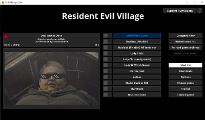

トップ>MOD工房>バイオ8MOD作成に関する情報
MODの導入方法については解説サイトが多数存在するのですが、MODの作成に関して日本語で説明しているサイトがなかったので、自分でまとめることにしました。
このページでは、バイオ8のMOD作成に関して僕が知る情報をMODの種類ごとに記載します。
なお、MOD作成に詰まったときの情報の集め方を別ページにまとめてありますので、よろしければそちらもご覧ください。
日本のサイトでも紹介ページが多数存在するので、知っている方も多いと思います。
開発はバイオMOD界の大ボスであるFllufyQuack氏が行っています。
完成したMODはこのツールを使って適用します。
Fllufy Manager同様、FlluffyQuack氏が開発しています。
ただし、抽出後のファイルは独自フォーマットとなっており、blender、photoshop等で中身を閲覧することはできません。
↓REtoolの詳細はこちら
PAK/TEX editing tool
Noesisは3Dモデル、テクスチャ、アニメーション等のファイルを閲覧、変換するためのツールです。
バイオ用のプラグインが存在し、独自フォーマットのファイルをfbxやdds等に変換できます。
↓Noesisのダウンロードはこちら
Rich Whitehouse
↓バイオ用プラグインの詳細はこちら
Exporting custom models to RE2, RE3 and DMC5 with Noesis
ファイル名にはキャラ名等の情報が記載されていない場合もあるため、このファイルリストを確認することで目的のファイルが探しやすくなります。
ただし、全てのファイルを網羅しているわけではありません。
Fllufy Manager同様、FlluffyQuack氏が開発しています。
編集したいリソースのパスを探すときに使えます。
↓Filepath Dumperのダウンロードはこちら
RE Engine Filepath Dumper - Resident Evil Village | FluffyQuack on Patreon
MOD工房
バイオ8 MOD作成に関する情報まとめ
このページではバイオ8のMOD作成に関して僕が知る情報を記載します。
なお、ここで紹介する情報やツールの信頼性、安全性は保証できません。MODの作成は自己責任でお願いします。
はじめに
最近、バイオハザードヴィレッジ(以下バイオ8)のMODの作成にハマっており、MODの作成手順について調べています。MODの導入方法については解説サイトが多数存在するのですが、MODの作成に関して日本語で説明しているサイトがなかったので、自分でまとめることにしました。
このページでは、バイオ8のMOD作成に関して僕が知る情報をMODの種類ごとに記載します。
なお、MOD作成に詰まったときの情報の集め方を別ページにまとめてありますので、よろしければそちらもご覧ください。
1.MOD全般
1.1.Fllufy Manager

Fllufy ManagerはMODの管理ツールです。日本のサイトでも紹介ページが多数存在するので、知っている方も多いと思います。
開発はバイオMOD界の大ボスであるFllufyQuack氏が行っています。
完成したMODはこのツールを使って適用します。
1.2.REtool
REtoolは.pakファイルから3Dモデル等のリソースを抽出するためのツールです。Fllufy Manager同様、FlluffyQuack氏が開発しています。
ただし、抽出後のファイルは独自フォーマットとなっており、blender、photoshop等で中身を閲覧することはできません。
↓REtoolの詳細はこちら
PAK/TEX editing tool
1.3.Noesis
バイオ用のプラグインが存在し、独自フォーマットのファイルをfbxやdds等に変換できます。
↓Noesisのダウンロードはこちら
Rich Whitehouse
↓バイオ用プラグインの詳細はこちら
Exporting custom models to RE2, RE3 and DMC5 with Noesis
1.4.Ultimate File List
MOD掲示板のUltimate File Listというスレには各ファイルの内容が大まかに記されています。ファイル名にはキャラ名等の情報が記載されていない場合もあるため、このファイルリストを確認することで目的のファイルが探しやすくなります。
ただし、全てのファイルを網羅しているわけではありません。
1.5.Filepath Dumper
Filepath Dumperはゲームがアクセスしたリソースのパスを記録するためのツールです。Fllufy Manager同様、FlluffyQuack氏が開発しています。
編集したいリソースのパスを探すときに使えます。
↓Filepath Dumperのダウンロードはこちら
RE Engine Filepath Dumper - Resident Evil Village | FluffyQuack on Patreon